점심시간 1시간으로 시작한 부업
발표자 Shane Hummus는 학자금 빚이 많은 약사였어요. 일을 시작한 지 석 달 만에 그 일이 싫어졌지만, 그만두고 다른 걸 준비할 여유는 없었다고 해요. 그래서 매장 뒤편에서 보내는 점심시간 1시간과 주말에 부업을 만들었고, 그 부업이 지금까지 1,000만 달러 넘게 벌어 줬다고 말해요.
그가 도운 사람들도 대부분 본업을 그만두지 않고 시작했다고 해요. 그래서 이 영상은 "회사 다니면서 할 수 있는가"를 기준으로 부업 다섯 가지를 골랐어요. 아래 화면처럼 부업마다 세 가지를 짚어요.
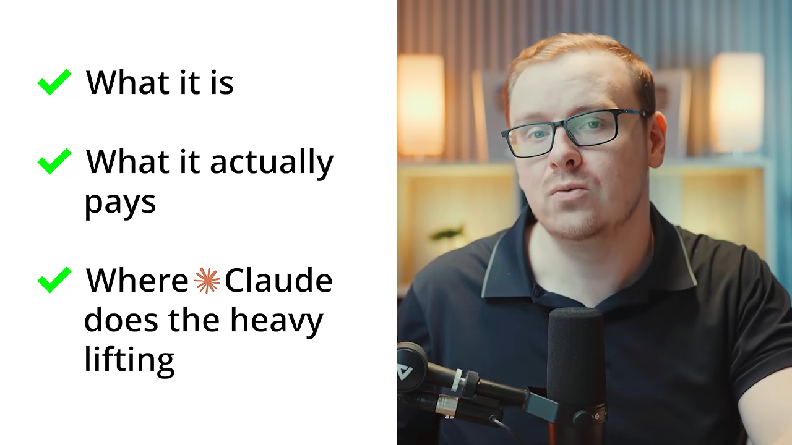
대상도 넓게 잡아요. 간호사 같은 의료인, 경력이 쌓인 직장인, 연봉 높은 회사원, 마케팅 매니저, 이제 막 사회생활을 시작한 사람까지 각자 맞는 부업이 하나씩 있다고 해요. 사례마다 실명과 실제 수익 증거를 붙이겠다고 약속하는데, 그 숫자 중 일부는 발표자 본인의 주장이라 아래에서 따로 표시했어요.
① 코딩 없이 앱 만들기
첫 번째는 코드를 몰라도 앱을 만드는 거예요. 원하는 걸 평범한 말로 설명하면 Claude가 실제 코드를 써요. 발표자 말로는 "코딩을 배우는 게 아니라 설명하는 법을 배우는 것"이에요. 다만 그는 시작부터 경고해요. 앱으로 성공할 확률은 다른 사업보다도 낮다고요. 그래서 이 부업은 "어떻게 확률을 높이느냐"가 핵심이에요.
Max: 앱 28개를 낸 직장인 개발자
첫 사례는 Max예요. 화면의 프로필에는 "iOS engineer by day | indie hacker by night"라고 적혀 있어요. 낮에는 회사에서 아이폰 앱 개발자로, 밤에는 혼자 앱을 내는 인디 해커로 일한다는 뜻이에요. 아이 둘을 키우면서 8개월 동안 앱 28개를 냈어요.
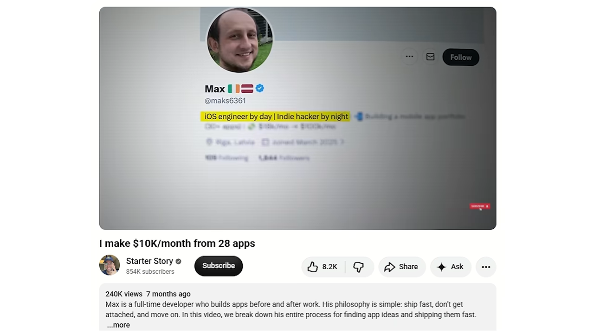
숫자를 보면 이래요. 수익은 월 200달러에서 월 1만 달러로 늘었고, 비용은 월 300달러 정도예요. 그중 앱 4개가 각각 월 1,500달러쯤을 벌어요. 아래 화면 하단 자막의 $1,500이 그 앱 하나의 월수입이에요.
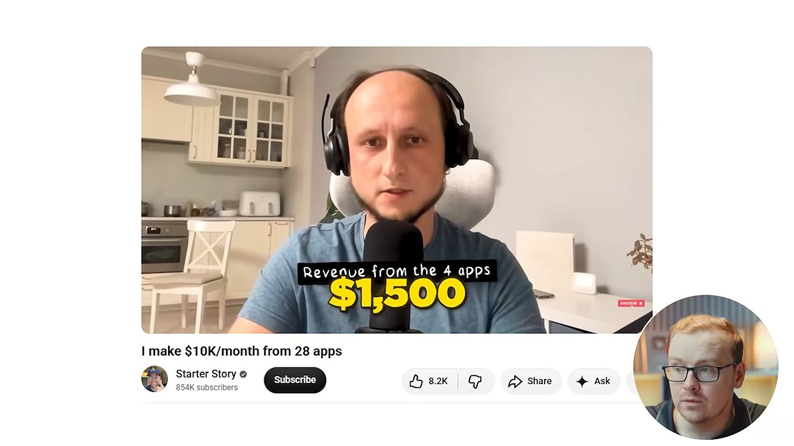
어떻게 이렇게 빨리 냈을까요. Max는 Claude로 화면과 기능을 설계하고, 앱끼리 코드의 90% 정도를 재사용했어요. 가장 빨랐던 앱은 아이디어부터 App Store 출시까지 2시간이 걸렸어요. 그리고 앱 하나에 다 걸지 않았어요. 아래 슬라이드가 그 전략을 정리해요.
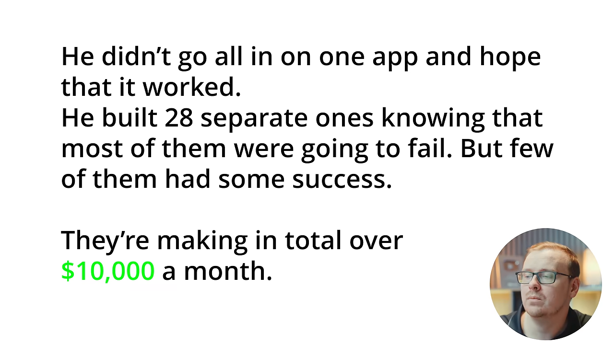
개발자가 아니어도 될까요
Max는 원래 개발자였죠. 그래서 발표자는 비개발자 사례를 더 보여 줘요. Mikey No Code 채널에는 코딩 없이 Claude Code로 1만 달러짜리 앱을 만든 영상이 있고, Code with Beto 채널은 경험이 전혀 없는 사람이 첫 앱을 만드는 과정을 보여 줘요. 같은 채널에는 20분 만에 앱을 완성하는 영상도 있어요.
발표자 회사의 직원 사례도 나와요. 아래 화면의 Wispr Flow는 키보드 대신 말로 입력하게 해 주는 앱인데, 코딩을 전혀 모르는 직원이 Claude로 비슷하게 동작하는 앱을 만들었다고 해요.
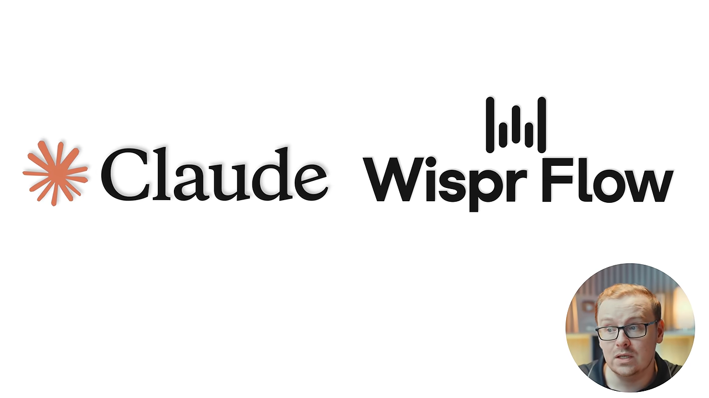
가장 확률 높은 방법: 돈 버는 앱을 1% 다르게
발표자가 가장 똑똑한 방법으로 꼽는 건 이미 돈을 버는 앱을 찾아 조금 고치는 거예요. 아래 화면은 앱 3개를 복제해서 월 3만 5,000달러를 번다는 영상이에요. 썸네일에는 $400K/YEAR라고 적혀 있고, 발표자도 연 40만 달러가 넘는다고 소개해요.
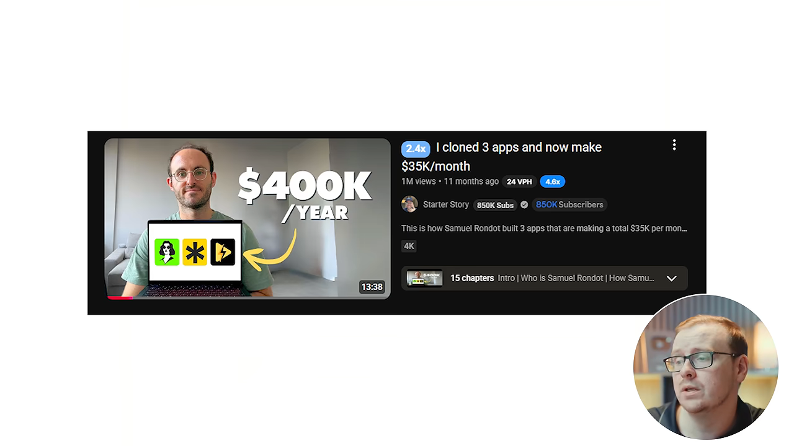
발표자는 여기서 분명히 선을 그어요. 남의 앱을 베끼라는 게 아니라, 앱의 아이디어를 가져와 더 낫고 다르게 만들라는 거예요.
Claude에게 먼저 인터뷰를 시켜요
발표자가 가장 강조하는 요령이에요. Claude를 열고 "앱 만들어 줘"라고 하지 말래요. 아래 슬라이드처럼 코드 한 줄 쓰기 전에 Claude가 나에게 질문하게 해요. 앱이 무슨 일을 하는지, 누구를 위한 건지, 핵심 기능 하나는 뭔지, 내가 이미 아는 건 뭔지요. 그다음에 Claude가 화면을 하나하나 설계하고 코드를 써요.
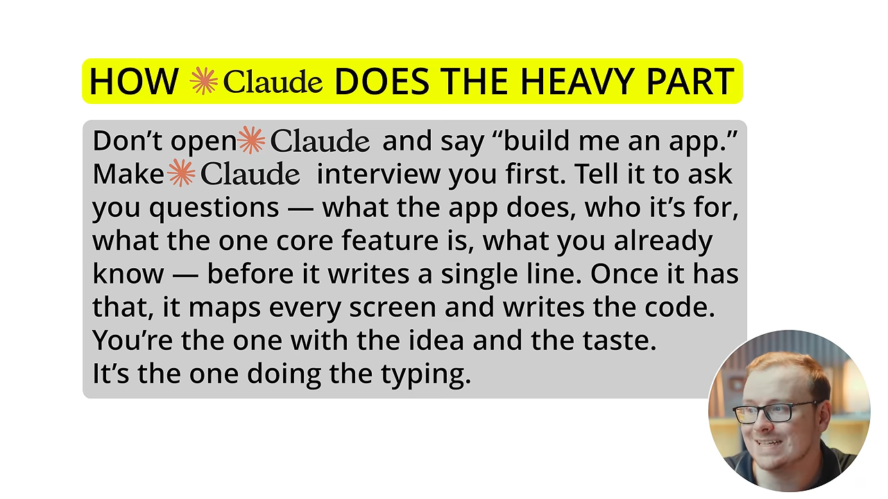
발표자도 자기 유튜브 코칭 회원들이 쓰는 AI 도구를 이 방식으로 만들었다고 해요. Claude가 필요한 맥락을 물으면 자료를 찾아 올려 주고, 좋은 답이 나올 만큼 맥락이 쌓일 때까지 반복했대요.
화면에 띄운 프롬프트는 이래요. 첫 줄에서 "만들기 전에 한 번에 질문 하나씩 나를 인터뷰해 줘. 코딩을 못 하지만 간단한 앱을 만들고 싶어"라고 밝히고, 물어볼 것 네 가지를 정해 줘요.
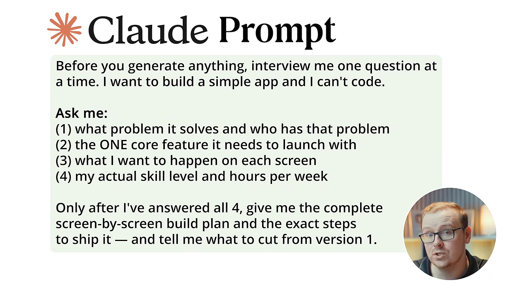
- 무슨 문제를 풀고, 누가 그 문제를 겪는지
- 출시할 때 꼭 있어야 하는 핵심 기능 하나
- 화면마다 무슨 일이 일어나야 하는지
- 내 실제 실력과 주당 쓸 수 있는 시간
네 가지에 다 답하면 화면별 설계, 출시까지의 단계, 첫 버전에서 뺄 것을 달라고 해요. 화면 속 원문은 아래와 같아요.
Before you generate anything, interview me one question at
a time. I want to build a simple app and I can't code.
Ask me:
(1) what problem it solves and who has that problem
(2) the ONE core feature it needs to launch with
(3) what I want to happen on each screen
(4) my actual skill level and hours per week
Only after I've answered all 4, give me the complete
screen-by-screen build plan and the exact steps
to ship it — and tell me what to cut from version 1.② 이미 아는 것 가르치기
두 번째는 이미 아는 걸 가르치는 거예요. 학생, 과외 받는 사람, 코칭 받는 사람에게 같은 설명을 반복하고 있다면, 그 설명으로 한 번만 돈을 받거나 아예 못 받고 있는 셈이에요. 발표자는 한 번 녹화해 두고 누가 볼 때마다 돈을 받자고 해요. 전문가일 필요는 없고, 지금 하는 일을 가르치면 된다고 해요.
교재, 유튜브, 앱으로 커진 세 교사
첫 사례는 교사 Lisa Collum이에요. 통장에 남은 마지막 99달러로 사무용품점에서 바인더 다섯 개를 사서, 자기 교실에서 쓰던 글쓰기 교육과정을 넣어 다른 학교에 팔았어요. 아래 기사 화면의 노란 부분이 그 결과예요.
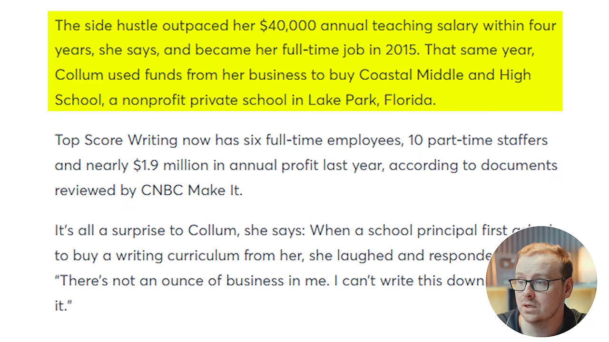
발표자는 이 숫자가 매출이 아니라 이익이라고, 직접 확인했다고 덧붙여요. 이어서 "너무 기초적인 내용이라 아무도 돈을 안 낼 것"이라는 걱정에 English with Lucy를 예로 들어요. 기초 문법과 어휘, 발음을 가르치는 채널이에요. 아래 화면은 채널 분석 도구 화면인데, 오른쪽 끝 칸이 최근 28일 추정 수익이에요.
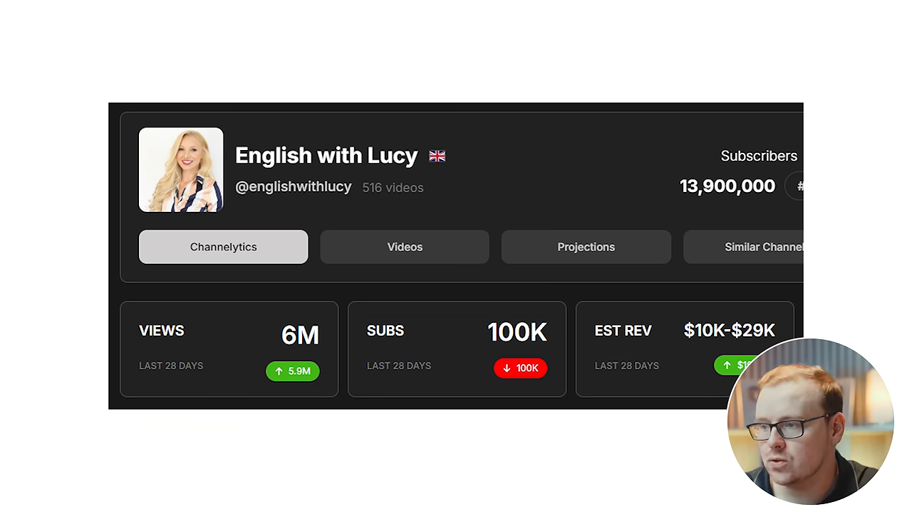
발표자는 이게 애드센스 수익만이라고 하면서, 사업 콘퍼런스에서 Lucy 부부가 월 40만 달러 넘게 번다고 발표하는 걸 들었다고 해요. 화면으로 확인되는 건 추정 광고 수익뿐이고, 월 40만 달러는 발표자가 전해 들은 숫자예요.
세 번째는 인도의 물리 교사 Alakh Pandey예요. 지하실에서 칠판도 잘 안 보이는 카메라로 수업을 찍기 시작했어요. 그 유튜브 채널이 PhysicsWallah라는 앱과 회사로 커졌어요.
발표자의 결론은 짧아요. 이미 가르치고 있는데, 한 번에 한 사람에게 공짜로 하고 있을 뿐이래요. 바뀌는 건 녹화한다는 것 하나예요.
지겨운 질문 10개에서 시작해요
Claude를 쓰는 법은 아래 슬라이드에 있어요. 직장에서 가장 자주 받는 질문 10개를 적어요. 코칭하는 사람, 환자, 고객, 학생, 자녀에게 받는 질문도 돼요. 슬라이드 둘째 줄처럼 흥미로운 질문이 아니라 한숨 나오는 지겨운 질문을 골라요.
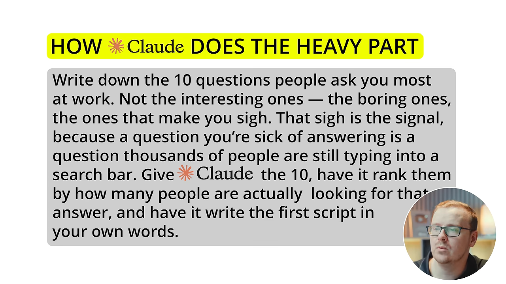
질문 10개를 Claude에게 주고, 실제로 그 답을 찾는 사람이 많은 순서대로 순위를 매기게 해요. 그리고 1위 질문의 첫 대본을 내 말투로 쓰게 해요. 화면의 프롬프트는 네 가지를 묻게 해요.
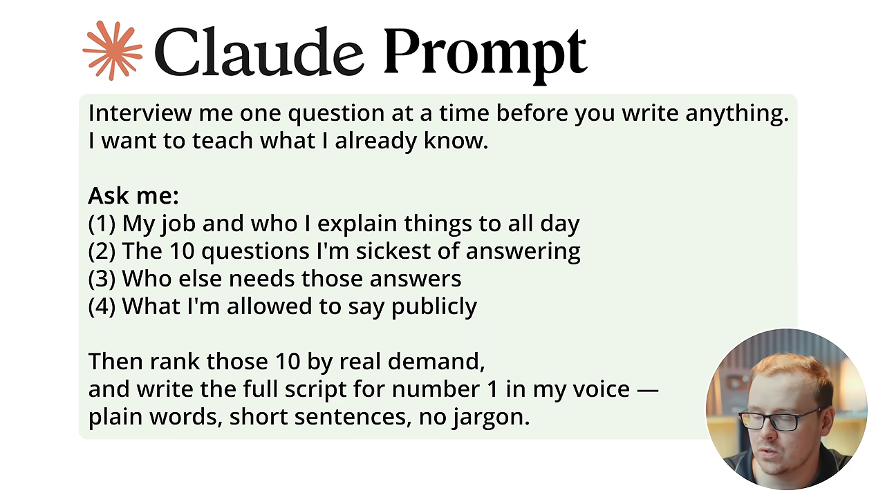
- 내 일이 뭐고, 하루 종일 누구에게 무엇을 설명하는지
- 답하기 가장 지겨운 질문 10개
- 그 답이 필요한 사람이 또 누구인지
- 공개적으로 말해도 되는 범위
Interview me one question at a time before you write anything.
I want to teach what I already know.
Ask me:
(1) My job and who I explain things to all day
(2) The 10 questions I'm sickest of answering
(3) Who else needs those answers
(4) What I'm allowed to say publicly
Then rank those 10 by real demand,
and write the full script for number 1 in my voice —
plain words, short sentences, no jargon.돈 버는 방법은 여러 가지예요. 유튜브나 다른 소셜 미디어 광고 수익이 있고, 발표자는 그중 유튜브를 가장 좋게 봐요. 디지털 상품을 팔 수도 있어요. 앞의 사례로 보면 PhysicsWallah는 앱을, English with Lucy는 디지털 상품을, Lisa Collum은 실물 교재를 팔았어요.
③ 먼저 겪어 본 결정 안내하기
세 번째는 결정을 앞둔 사람을 안내하는 거예요. 많은 사람이 곧 내릴 결정을 나는 이미 내렸고, 결과가 어땠는지도 알아요. 그들은 아직 모르죠. 발표자는 이 차이가 돈이 된다고 해요.
먼저 겪은 사람의 세 가지 사례
첫 사례는 해고를 앞두고 있던 Isaiah Harris예요. 발표자의 무료 콘텐츠와 라이브 강의에서 시작할 답을 얻었다고 해요. 아래 채널 화면 소개란처럼 싱어송라이터, 예배 인도자, 녹음 아티스트 같은 숙련된 보컬에게 발성 준비 운동을 가르쳐요.
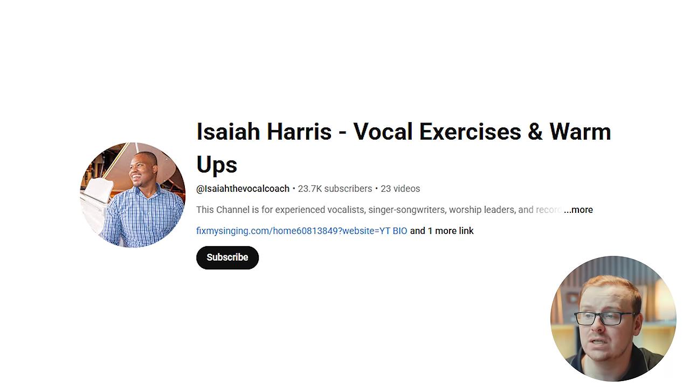
두 번째는 Kevin Hunter예요. 자동차 딜러 업계에서 오래 일했고, 지금은 차 살 때 당하지 않는 법을 알려 줘요. 아래 화면의 영상 제목들이 보여 주듯, 딜러가 쓰는 수법을 반대편 책상에서 본 사람으로서 설명해요. 차를 파는 게 아니에요.
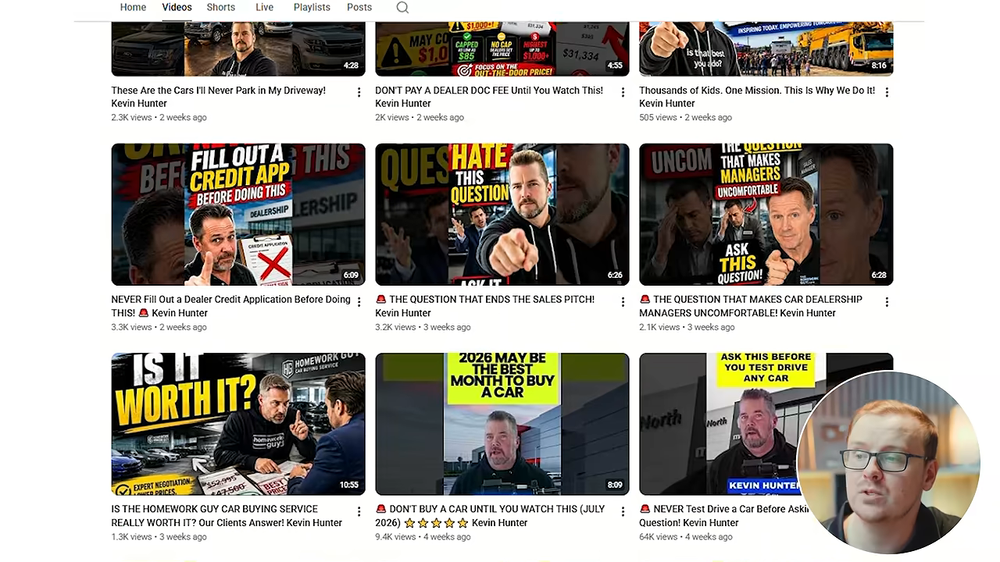
세 번째는 발표자 자신이에요. 싫은 직업 때문에 빚을 진 경험으로, 약사로 일하면서 대학 전공과 진로 고르는 법을 다뤘어요. 좋은 전공과 나쁜 전공, 사기당하지 않고 학교 고르는 법, 좋아하면서도 돈이 되는 진로를 고르는 법이요.
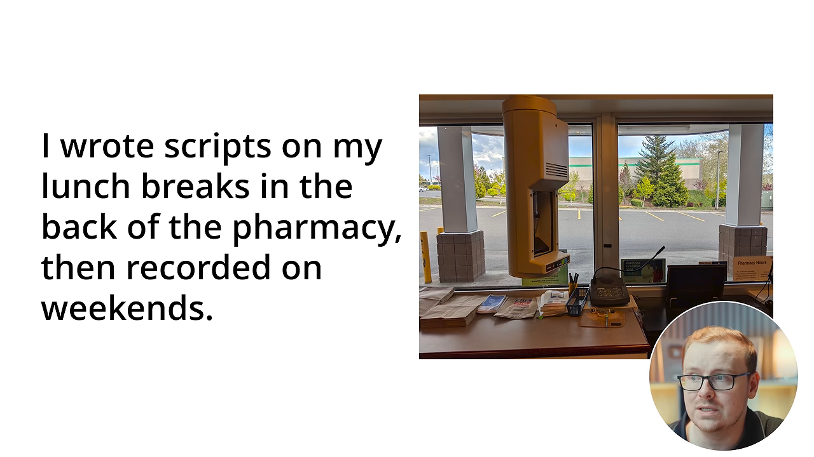
결정 전날의 나에게 할 말을 적어요
Claude 쓰는 법은 아래 슬라이드예요. 살면서 내린 가장 큰 결정을 적어요. 슬라이드 목록처럼 전공, 이사, 진로, 주택담보대출, 수술 같은 거예요. 여러 개 적어도 돼요. 그리고 그 결정을 내리기 전날의 나와 똑같은 자리에 선 사람에게 무슨 말을 해 줄지 적어요.
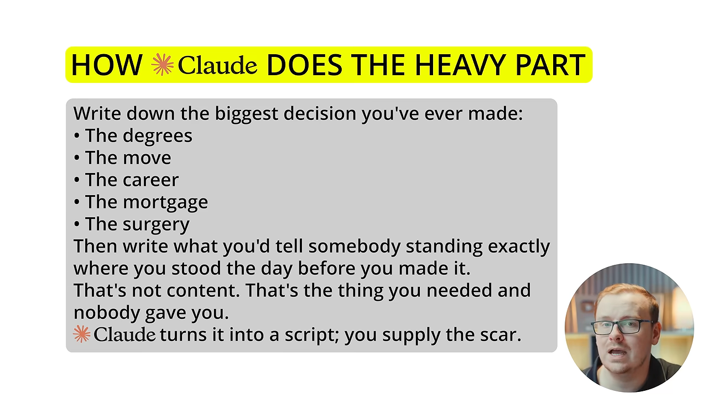
발표자는 타임머신을 타고 과거의 나에게 조언한다고 생각해 보래요. 그때 내게 필요했지만 아무도 주지 않은 말이 바로 콘텐츠예요. 화면의 프롬프트는 이 네 가지를 묻게 해요.
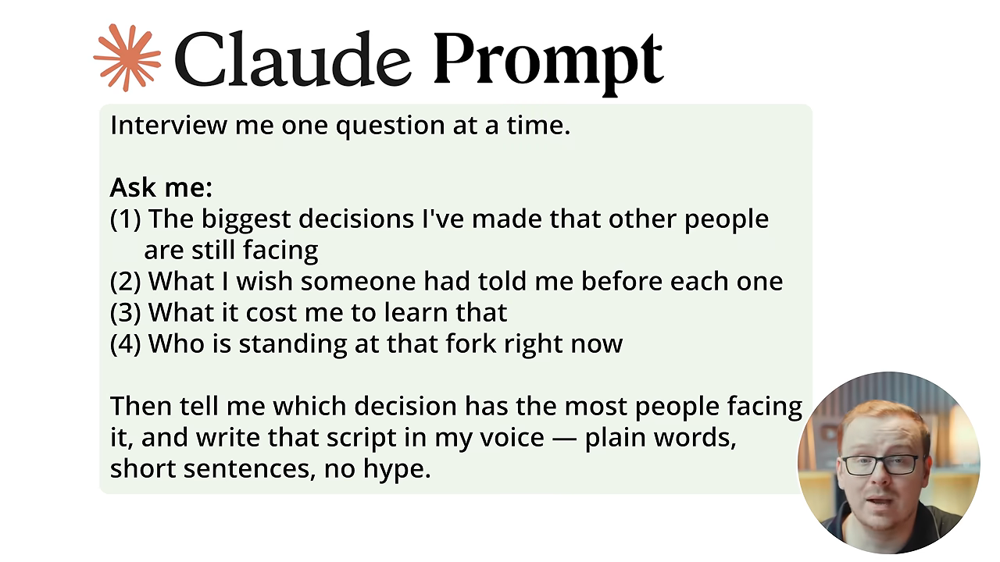
- 내가 내린 큰 결정 중 다른 사람들이 아직 마주하고 있는 것
- 각 결정 전에 누가 말해 줬으면 했던 것
- 그걸 배우는 데 치른 대가
- 지금 그 갈림길에 서 있는 사람이 누구인지
Interview me one question at a time.
Ask me:
(1) The biggest decisions I've made that other people
are still facing
(2) What I wish someone had told me before each one
(3) What it cost me to learn that
(4) Who is standing at that fork right now
Then tell me which decision has the most people facing
it, and write that script in my voice — plain words,
short sentences, no hype.④ 기업에 AI 에이전트 팔기
네 번째는 기업에 AI 에이전트를 파는 거예요. 발표자는 이걸 "고용한 로봇"이라고 불러요. 아래 슬라이드가 정의예요. 회사가 지금 사람에게 돈을 주고 시키는 반복 업무 하나를 자동화로 만들고, 그 사람 인건비의 일부만 받아요.
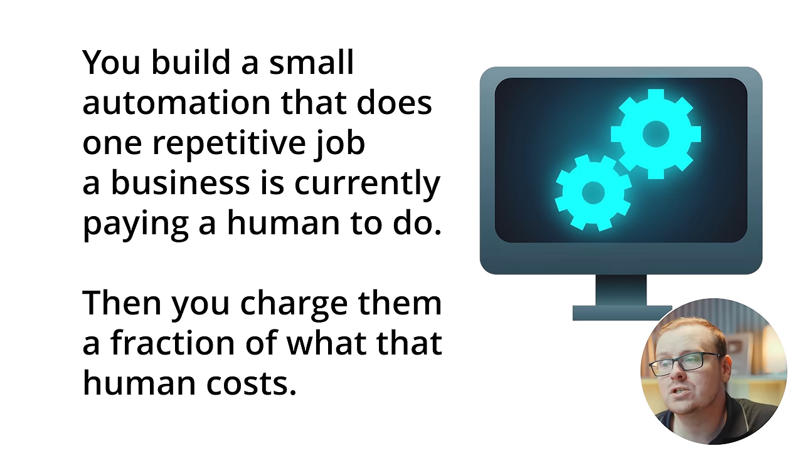
기술도 큰돈도 없이 시작한 사례
기술자가 아니어도 될까요. Nate Herk는 초보 시절 AI 에이전트 4개를 2만 3,000달러에 팔았어요. 아래 화면이 그 경험을 다룬 영상이에요. 썸네일 문구는 "그렇게 복잡한 것도 아니었다"예요.
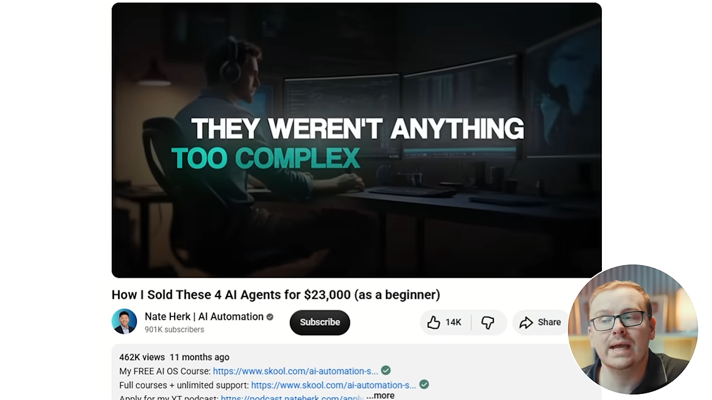
큰돈이 들까요. Sal Aiello와 Monica Powers는 모두 185달러를 들여 DimeADozen이라는 AI 도구를 만들었어요. 아래 기사 화면의 노란 부분처럼, 7개월 동안 6만 6,000달러를 벌었고 15만 달러에 팔았어요.
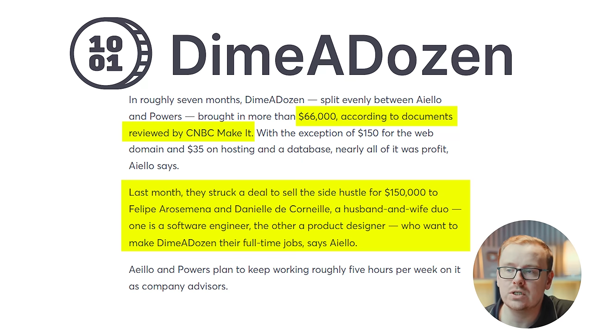
두 가지 조언
첫째, 동네 피자집보다 이미 온라인으로 일하는 회사를 노려요. 오프라인 가게도 나중에는 될 수 있지만 지금은 온라인 회사가 낫다고 해요. 발표자는 이게 실제로 돈을 버는 사람과 이걸로 영상만 찍는 사람의 차이라고 말해요.
둘째, 사람들이 이미 사는 걸 보고 비슷하게, 조금 다르거나 더 낫게 팔아요. 배관공들이 이미 웹사이트를 산다면 배관공에게 웹사이트를 팔면 돼요. 누군가 이미 하고 있다는 건 된다는 증거, 곧 개념 증명이에요. 앱 부업의 "돈 버는 앱을 1% 다르게"와 같은 논리예요.
내가 매일 보는 비효율에서 상품을 찾아요
Claude 쓰는 법은 아래 슬라이드예요. 내 직장에서 누군가 비효율적으로 하는 반복 업무 하나를 골라요. 슬라이드 목록처럼 들어오는 메일 분류, 미수금 독촉, 똑같은 답장 다섯 개 쓰기 같은 거예요.
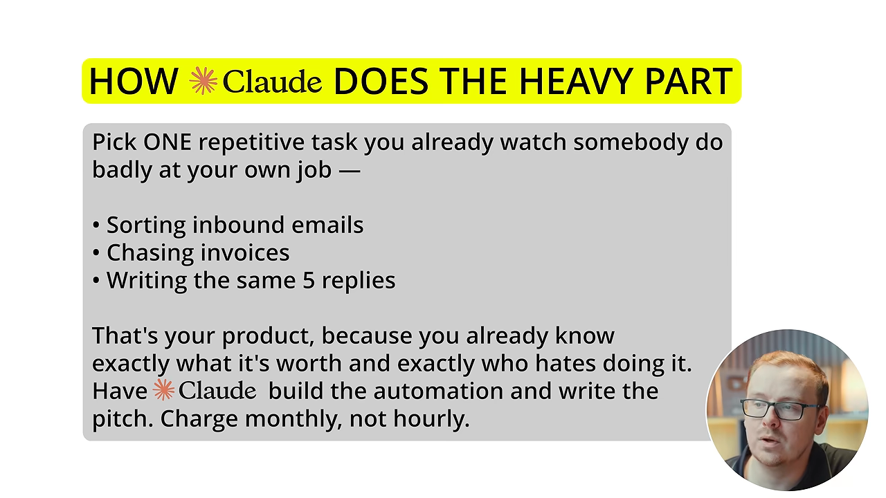
그 일이 얼마짜리인지, 누가 그 일을 싫어하는지 이미 알기 때문에 그게 곧 상품이 돼요. 자동화를 만드는 것과 제안서를 쓰는 건 Claude에게 맡겨요. 화면의 프롬프트는 이 네 가지를 묻게 해요.
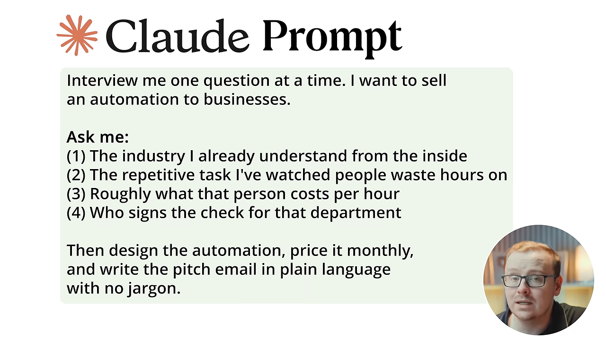
- 내가 안에서 잘 아는 업계
- 사람들이 몇 시간씩 버리는 걸 내가 지켜본 반복 업무
- 그 일을 하는 사람의 대략적인 시급
- 그 부서에서 결제를 승인하는 사람
Interview me one question at a time. I want to sell
an automation to businesses.
Ask me:
(1) The industry I already understand from the inside
(2) The repetitive task I've watched people waste hours on
(3) Roughly what that person costs per hour
(4) Who signs the check for that department
Then design the automation, price it monthly,
and write the pitch email in plain language
with no jargon.⑤ 내가 일하는 시스템 설명하기
다섯 번째는 발표자가 "아무도 생각 못 하는 것"이라고 소개해요. 내 일을 하는 방법을 가르치는 게 아니라, 내 일이 속한 시스템을 설명하는 거예요. 아래 슬라이드가 그 이유를 말해요.
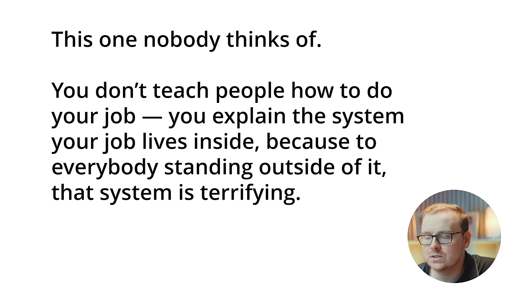
다음 슬라이드는 내부자가 이미 가진 세 가지를 열쇠 그림과 함께 보여 줘요. 그 언어를 이미 쓰고, 어느 문을 두드려야 하는지 알고, 서류가 실제로 무슨 뜻인지 알아요.
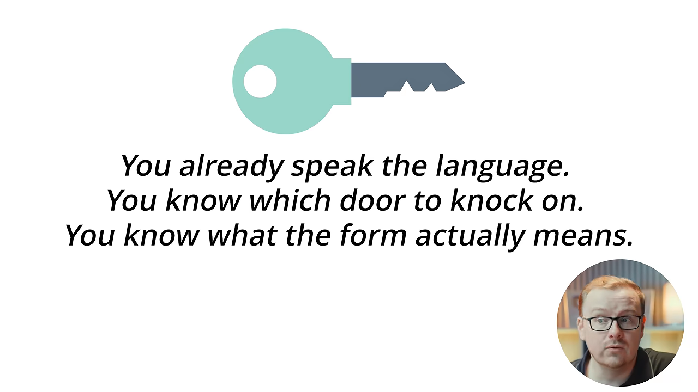
현직 간호사 두 사람의 사례
Nurse Jen은 지금도 의료계에서 일하는 정규 간호사예요. 본인 말로 "유튜브에 발끝도 담가 본 적 없었다"는데, 두 달도 안 돼 본업 수준 수입을 냈다고 해요. 아래 화면은 그녀의 인터뷰 장면이에요. 하단 자막을 보세요.
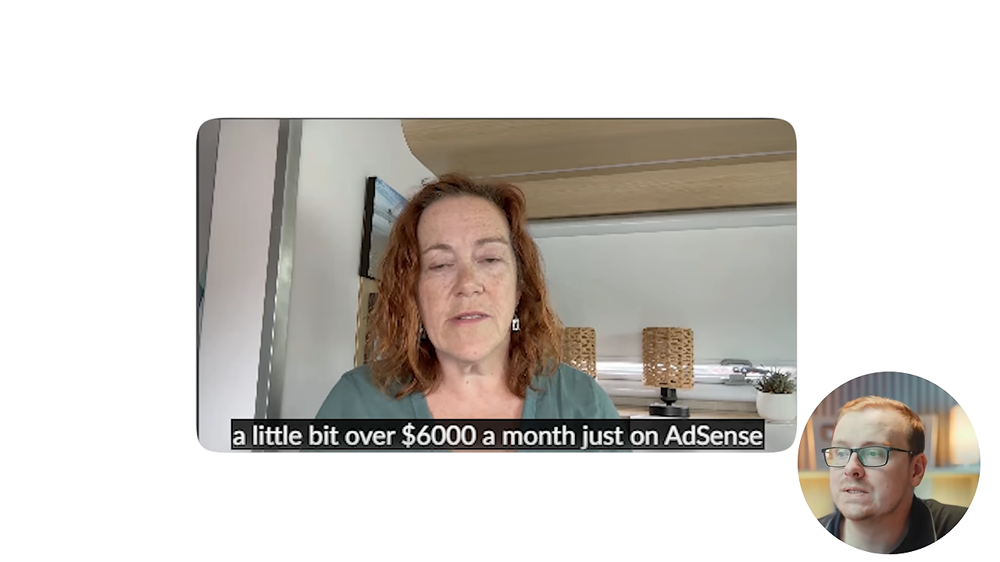
Nurse Julie는 33년 차 간호사예요. 20년 넘게 아무도 진단하지 못한 자가면역 질환을 겪었어요. 의료 지식과, 모두가 포기한 환자의 경험을 둘 다 가진 거예요. 아래 썸네일들처럼 영양제, 스트레스 호르몬, 머리가 멍한 증상 같은 주제를 다뤄요.
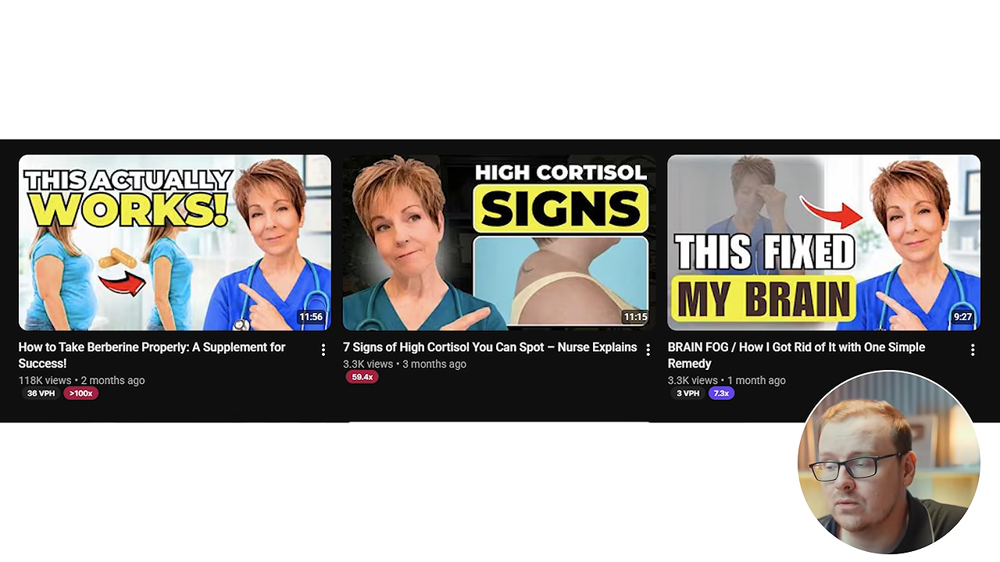
의료계만 되는 건 아니라고 해요. IT(Information Technology), 사이버 보안, 디지털 마케팅, 회계와 재무 분야에서도 같은 방식으로 성공한 사람이 있다고 말해요.
"그건 다 알잖아요"가 사업이에요
Claude 쓰는 법은 아래 슬라이드예요. 업계 바깥 사람이 뭘 물었을 때 "그건 다 알잖아요"라고 말할 뻔한 순간을 떠올려요. 그들은 몰라요. 발표자는 그게 사업의 전부라고 해요.
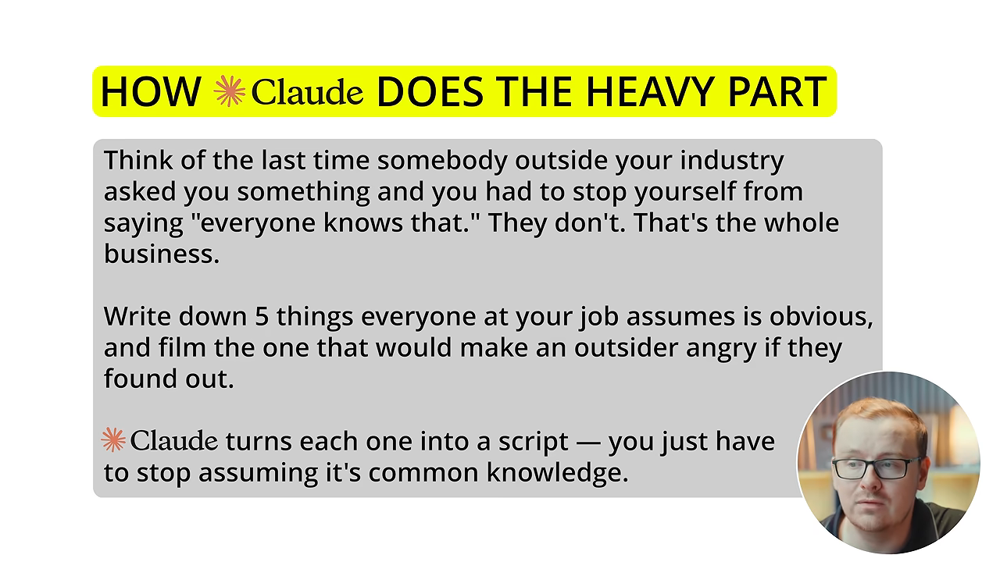
화면의 프롬프트는 네 가지를 묻게 해요. 4번이 눈에 띄어요. 법적·윤리적으로 말할 수 없는 것을 먼저 알려 주고, 그 선을 넘는 아이디어는 Claude가 표시하게 해요. 의료나 금융처럼 규제가 있는 업계라면 꼭 필요한 장치예요.
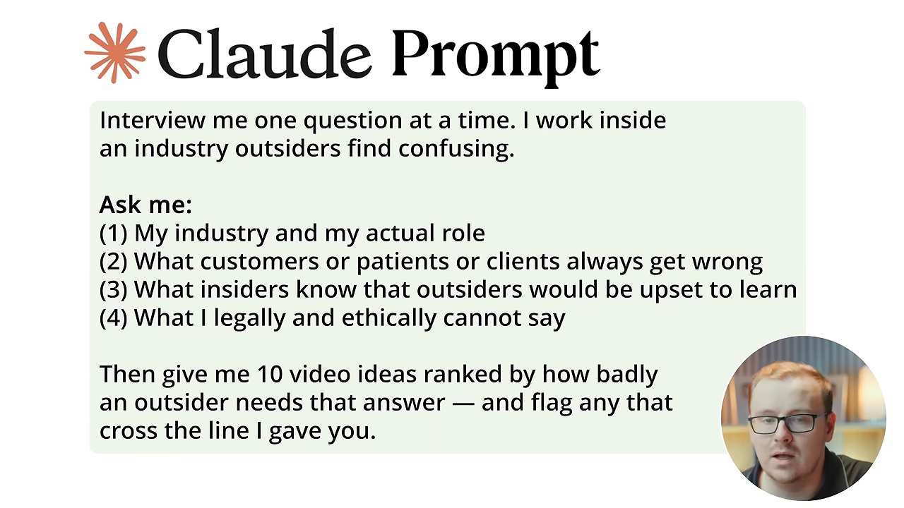
- 내 업계와 실제 역할
- 고객, 환자, 의뢰인이 늘 잘못 아는 것
- 내부자는 알지만 바깥 사람이 알면 화낼 것
- 법적·윤리적으로 말할 수 없는 것
Interview me one question at a time. I work inside
an industry outsiders find confusing.
Ask me:
(1) My industry and my actual role
(2) What customers or patients or clients always get wrong
(3) What insiders know that outsiders would be upset to learn
(4) What I legally and ethically cannot say
Then give me 10 video ideas ranked by how badly
an outsider needs that answer — and flag any that
cross the line I gave you.다섯 가지를 한눈에, 그리고 공통점
다섯 부업을 나란히 놓으면 이래요. 별명은 영상 속 제목 카드에 붙은 이름이에요.
| 부업 | 재료 | Claude가 맡는 일 | 영상 속 사례 |
|---|---|---|---|
| ① 코딩 없이 앱 만들기 (The Ghost Builder) | 이미 돈을 버는 앱의 아이디어 | 화면 설계, 코드 작성 | Max: 앱 28개, 월 1만 달러 |
| ② 아는 것 가르치기 (The Rerun) | 매일 반복하는 설명, 지겨운 질문 10개 | 수요 순위, 첫 대본 | Lisa Collum: 연 이익 약 190만 달러 |
| ③ 결정 안내하기 (The Second Opinion) | 이미 내린 큰 결정과 그 결과 | 대본 | Isaiah Harris: 두 달 만에 순이익 3만 2,000달러 |
| ④ AI 에이전트 팔기 (The Hired Robot) | 직장에서 본 비효율적인 반복 업무 | 자동화 제작, 제안 메일 | DimeADozen: 7개월 6만 6,000달러, 15만 달러에 매각 |
| ⑤ 내가 일하는 시스템 설명하기 | 업계 안에서는 "다 아는 것" | 영상 아이디어 10개, 대본 | Nurse Jen: 두 달 안에 본업 수준 수입 |
재료 칸을 보면 다섯 가지 모두 내가 이미 가진 것에서 출발해요. 새로 배워야 하는 건 거의 없어요. 그리고 Claude를 쓰는 방식도 매번 같아요. 영상에 나온 네 개의 프롬프트는 모두 아래 그림의 세 단계를 따라요.
마지막으로 발표자는 다섯 부업 모두 결국 한 가지가 필요하다고 말해요. 사람을 모으는 통로, 곧 트래픽과 유통이에요. 그리고 인터넷에서 가장 좋은 통로로 유튜브를 꼽아요. 다만 발표자는 유튜브 성장을 돕는 코칭 사업을 하는 사람이라는 점은 알고 들으면 좋아요.